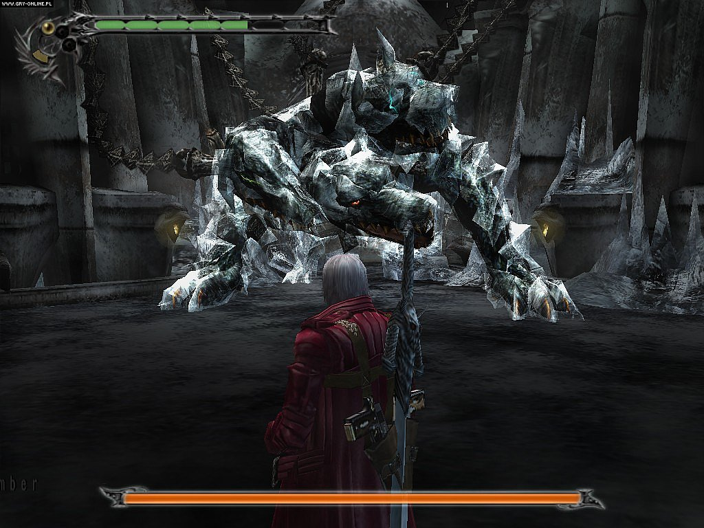
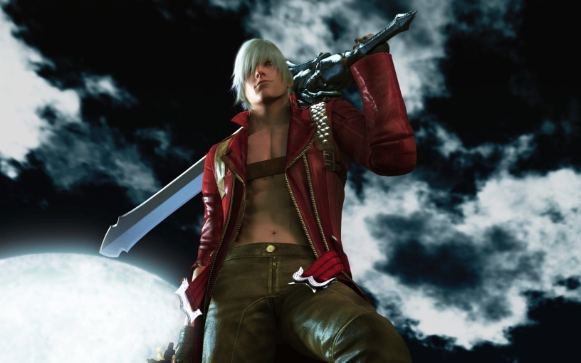
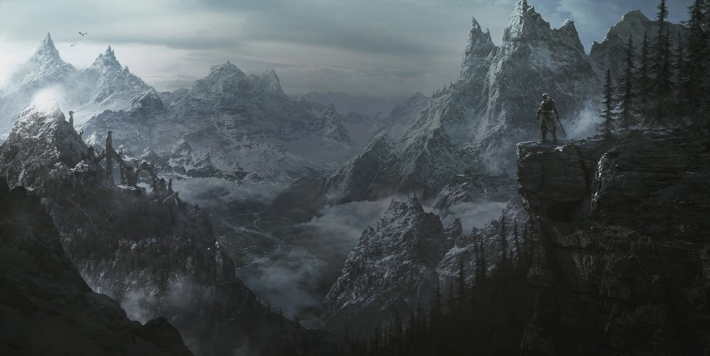
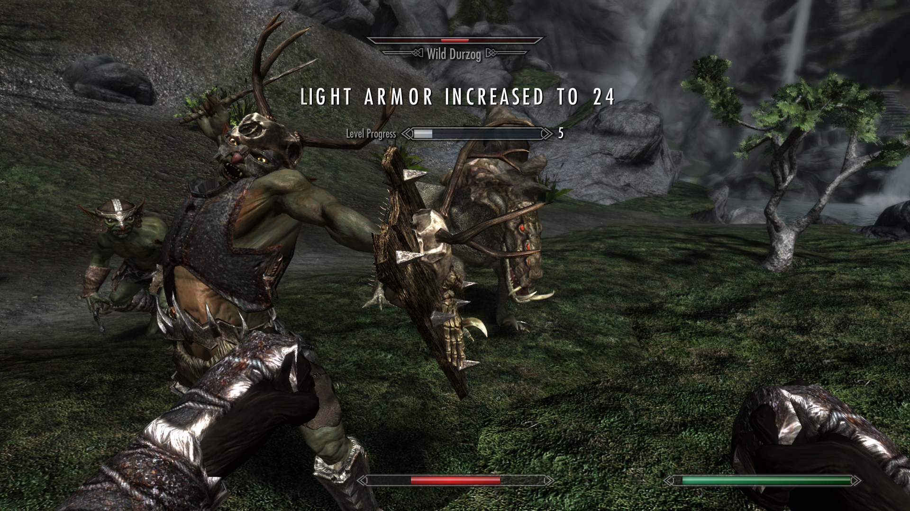

Joc de foarte mult timp jocuri video si pot spune cu usurinta ca am avut parte de multe aventuri, multe emotii si multa distractie in timpul petrecut printre ele.
Totusi, exista unele jocuri sau serii de jocuri care ma atrag mai mult decat altele si care m-au satisfacut mult mai mult decat celelalte.
Imi este foarte greu sa aleg intre unele jocuri pentru a stabili care este favoritul meu, de vreme ce fiecare este unic prin lumea, atmosfera, personajele si muzica sa. Dar un clasament nu va lipsi de pe aceasta pagina
Astfel, voi prezenta cateva din jocurile mele favorite; voi scrie putin despre ele si voi explica ce m-a facut sa le mentionez.
Trebuie retinut ca voi pune pe lista si cateva jocuri ce vor primi mentiune, fara a da detalii despre acestea.
#1 Devil May Cry 3: Special Edition
Si primul loc il primeste jocul Devil May Cry 3: Special Edition!
Jocul acesta mi-a dat foarte multe emotii in timp ce urmaream aventura protagonistului, Dante, care isi face drum spre fratele sau, Vergil, antagonistul jocului.
Ce m-a facut sa mentionez, de fapt, acest joc este caracterul lui Dante. Este intotdeauna destul de linistit, glumet, putin arogant si initial nu-i pasa atat de mult de imprejurimi, dar realizeaza pe parcurs ce trebuie facut pentru a salva omenirea, pentru a proteja ceea ce tatal lui a protejat cu 2000 de ani in urma.
Acest joc video este genial si cu siguranta il voi juca in continuare!
#2 The Elder Scrolls V: Skyrim
Pe al doilea loc se afla The Elder Scrolls V: Skyrim, ultimul joc din seria The Elder Scrolls.
Acest joc intra in categoria jocurilor RPG fantastice prin lumea si mecanica ce pun bazele jocului.
Iese in evidenta prin felul in care le este data jucatorilor libertatea de a-si crea orice fel de caracter, alegand una din cele 10 rase si numindu-l oricum doresc ei, iar apoi il specializeaza pe ce arma, armura, magie isi doresc.
Jocul este imens, aventuri au loc pe un taram vast plin de pericole, magie si dispute politice.
Atmosfera si felul in care este ilustrat universul jocului sunt cele care m-au impresionat cel mai mult si exact acestea, printre altele, il fac unul din jocurile mele favorite.